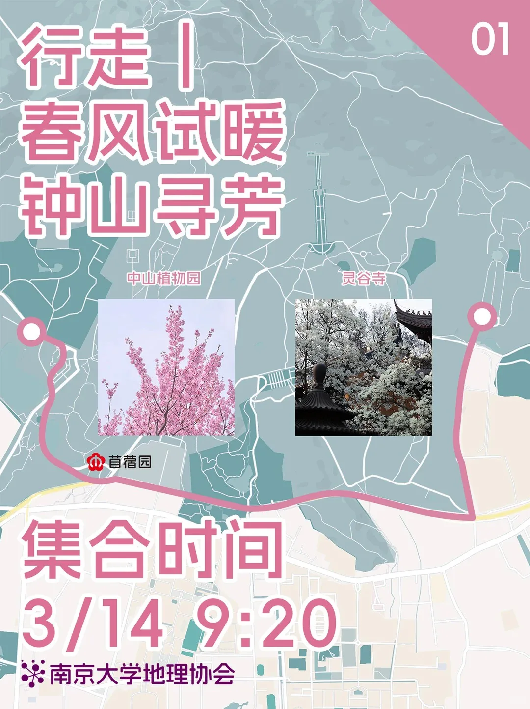

EXPLORATIONS / 协会活动
走进城市，也走向山野。
城市漫步、野外考察与阅读分享。在真实的地方，遇见具体的人和故事。
活动动态
目前没有正在报名的活动。欢迎加入活动 QQ 群，关注下一次出发。
查看参与方式

漫步 | 春风试暖，钟山寻芳
三月金陵，天光渐软，草木生新。风从钟山来，吹醒枝头花意，也吹动春日里最宜出行的心绪。南京的春天从不只是热闹，它也自有一种清润、幽静的意味。而钟山的春天，正是最宜缓行的。从中山植物园的樱花、郁金香，到灵谷景区的古寺、塔影与松风，既有春日花事的鲜妍，也有钟山人文的幽远。 这一次，我们
活动详情没有找到符合条件的活动，请尝试其他关键词。